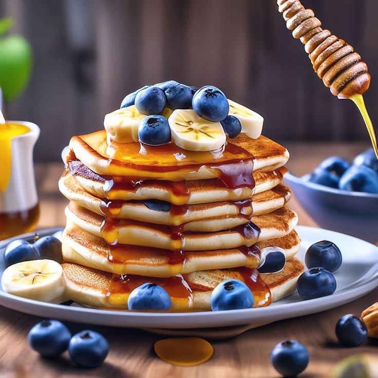

Soft, golden, and melt-in-your-mouth delicious! Light and airy on the inside with crisp golden edges, perfectly balanced for slow-burning carbs and high energy before training.

In a large mixing bowl, whisk together whole wheat or all-purpose flour, organic cane sugar, baking powder, and a pinch of salt.
In a separate jug, whisk whole milk (or oat milk), large egg, melted grass-fed butter, and vanilla extract until smooth and blended.
Pour wet mix into dry ingredients and gently fold until just combined. Small lumps are okay and help keep the pancakes extra fluffy!
Heat a lightly buttered griddle to medium. Pour ¼ cup batter per pancake. Flip when bubbles form on top (about 2 min) and cook until golden brown.